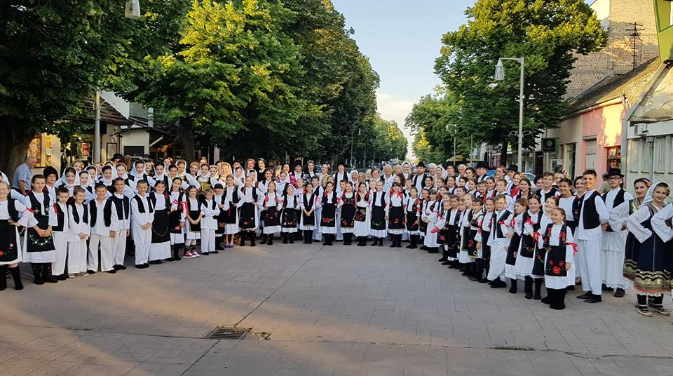

O nama
Kulturno umetničko društvo “SOKO” iz Inđije osnovano je davne 1948. godine, a pod imenom “SOKO” radi preko 20 godina. Ove 2018. godine imamo velku čast i zadovoljstvo što ćemo proslaviti 70. godina amaterizma u Inđiji. Najstariji smo i najbrojniji KUD u Opštini. Sa grupama rade mladi i stručni ljudi koji svoje slobodno vreme provode edukujući mlade naraštaje pravim i tradicionalnim kvalitetima. Osnovni cilj i misija našeg društva jeste očuvanje kulturne baštine našeg naroda a zatim druženje i putovanja koja su sastavni deo našeg društva.

Nagrade
Pripremni ansambl je 2011. godine doneo zlato sa Pokrajinskog festivala dece Vojvodine u Bačkoj Topoli sa Igrama iz Užica. 2013 godine i mlađa i starija dečija grupa osvojile srebro na pokrajini. Kao i Izvođački ansambl koji se plasirao na Pokrajinsku smotru u Rumu gde je osvojio Srebrnu plaketu. 2016 je bila jedna od najznačajnijih za naše društvo. Naime pripremni ansambl se nakon više selektivnih takmičarskih nastupa plasirao kao jedno od 5 najboljih iz Vojvodine na republičku smotru u maju mesecu koja se održala u Valjevu i sa istog se vratila sa srebrnom medaljom što je po prvi put slučaj za neki ansambl u Opštini Inđija.
Putovanja
Sve grupe dosta putuju, nastupalo se u Inđiji, , Staroj Pazovi, , Sremskim Karlovcima, Žabarima, Rumi, Pećincima, Bačkoj Topoli, Požarevcu, Novom Kneževcu, Trsteniku, Gardinovcima, Grgurevcima. Kanjiži, Novom Kneževcu, itd.
Dosta se putovalo i u inostranstvo pa smo bili i u Hrvatskoj, Bosni i Hercegovini, Makedoniji, Bugarskoj, Mađarskoj, Grčkoj, Češkoj, Poljskoj, Sloveniji, Italiji, Španiji, Danskoj, Nemačkoj, Italiji, Rusiji...
Repertoar
Negujemo igre, pesme, običaje iz čitave Srbije, i to:
- Igre iz Srema
- Banata
- Slavonije
- Leskovca
- Vranja
- Vranjskog polja
- Pčinje
- Bosilegradskog krajišta
- Vlaške igre
- Timoka
- Pirota
- Bele Palanke
- Metohije
- Užica
- Kobišnice
- Jasenice
- Gruže
- Jadra
- Crne Trave
- Mačve